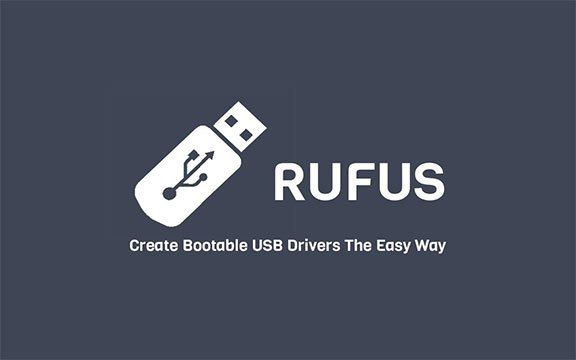
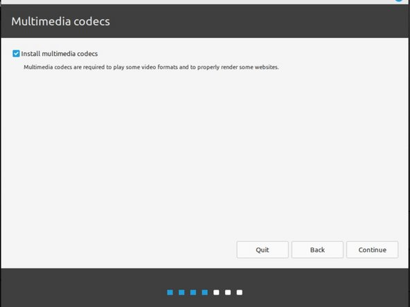

Welcome to the UJA-OS Installation Guide
Installing UJA-OS is the first step toward transforming your low-end devices into high-performance educational tools. Based on the reliable Fedora Linux, UJA-OS provides a seamless experience tailored for schools and institutions. Let's walk through the installation process together!
Why Choose UJA-OS?
UJA-OS is designed specifically for educational environments. Our operating system optimizes performance for low-end hardware, ensuring smooth operation without compromising user experience. Here are some reasons to choose UJA-OS:
- Optimized Performance: Built to run efficiently even on older hardware, making it ideal for schools.
- User-Friendly Interface: An intuitive desktop experience that’s easy to navigate for both students and teachers.
- Regular Updates: Continuous improvements and security enhancements to keep your system safe and up-to-date.
- Customizability: Tailor the environment to fit your needs with custom themes, icons, and settings.
System Requirements
Before you begin the installation, please ensure your hardware meets the following minimum requirements:
- 1 GHz processor or faster
- 2 GB RAM (4 GB recommended for optimal performance)
- 15 GB of free disk space
- Bootable USB or DVD drive
Having these specifications will ensure a smooth installation and operational experience.
Step 1: Download UJA-OS
Begin by downloading the latest version of UJA-OS from our official website. The ISO file will be your installation medium. Make sure to choose the version that suits your architecture (32-bit or 64-bit). Here's how to do it:
- Visit our official download page.
- Select the appropriate version of UJA-OS for your device.
- Click the download button and wait for the file to finish downloading.

Step 2: Create a Bootable USB or DVD
After downloading the ISO file, you’ll need to create a bootable USB or DVD. This process will allow your computer to boot from the UJA-OS installation medium. You can use tools like Rufus or Etcher for this task:
- Insert your USB drive or insert a blank DVD into your computer.
- Open your preferred tool (e.g., Rufus or Etcher).
- Select the UJA-OS ISO file you downloaded.
- Follow the prompts to create the bootable medium. Make sure to select the correct device to avoid data loss. 
Once this process is complete, you’ll have a bootable medium ready for installation.
Step 3: Boot from the Installation Medium
With your bootable USB or DVD ready, restart your computer and enter the BIOS/UEFI settings. You’ll need to change the boot priority to your USB or DVD drive. Follow these steps:
- Restart your computer.
- As it boots, press the appropriate key (usually F2, F12, ESC, or DEL) to enter BIOS/UEFI settings.
- Find the boot menu or boot priority settings.
- Select your USB or DVD drive as the primary boot device.
- Save your changes and exit the BIOS.

Step 4: Installation Process
Once your computer boots from the UJA-OS installation medium, you will see the welcome screen. Follow these steps to install UJA-OS:
- Select "Install UJA-OS" from the menu.
- Choose your preferred language and click "Continue".
- Set your time zone and keyboard layout, then click "Continue".
- Partition your disk. If you're unsure, you can choose "Erase disk and install UJA-OS" for a clean installation. This will remove all existing data on the drive, so ensure you have backups if necessary.
- Follow the prompts to set up your user account and password. Make sure to remember your credentials for future logins.
- Click "Install Now" and wait for the installation process to complete. This may take some time, so be patient! 
Step 5: Finalizing the Installation
After installation, the system will prompt you to remove the installation medium and reboot your computer. Here’s what to do next:
- Remove the USB drive or DVD from your computer.
- Click "Reboot Now" to restart your system.
- Upon restarting, you’ll be greeted with the UJA-OS welcome screen, ready for your first login!
Post-Installation Tips
Congratulations on successfully installing UJA-OS! Here are some tips to enhance your experience:
- Update Your System: Open the terminal and run
sudo dnf updateto ensure you have the latest packages and security patches. - Explore Pre-Installed Applications: Familiarize yourself with applications like LibreOffice, GIMP, and educational tools included in UJA-OS to maximize productivity.
- Customize Your Environment: Access the settings menu to personalize your desktop environment, including themes, icons, and wallpapers.
- Backup Regularly: Use tools like Deja Dup to keep your data safe by creating regular backups.
Troubleshooting Common Issues
If you encounter issues during installation or after booting, here are some common problems and solutions:
- Installation Fails: Ensure your bootable medium is created correctly. Try recreating it if necessary.
- Can't Boot into UJA-OS: Check your BIOS settings to ensure the correct boot device is prioritized.
- Graphics Issues: If you experience display problems, you may need to install additional drivers after installation.
For more specific issues, consult the UJA-OS community forums or our documentation for assistance.
Need Help?
If you have questions or need support, feel free to visit us at school. We're here to help you make the most of your UJA-OS experience!
Join the UJA-OS Community
Be part of our growing community of educators and tech enthusiasts. Share your experiences, tips, and tricks, and collaborate on projects that enhance learning with technology. Connect with us on social media and participate in discussions on our forum!